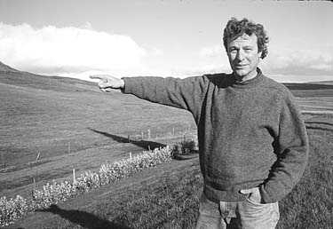
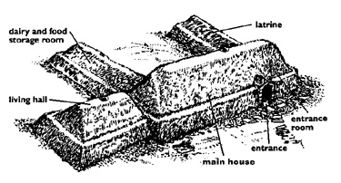
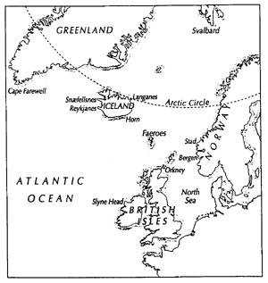

VV: Professor Byock, you originally intended being a lawyer; what drew you to something so different as medieval Scandinavian studies?
Byock:Well, I don't think it's so different - we can get to that later but to answer your question, I started to read Icelandic sagas while I was in law school, and I was really taken with them. So I went to Iceland and worked on a sheep farm for awhile before going to graduate school. Sheep farmers have a lot of time on their hands, so they tell each other stories, and I got even more interested in the stories, and also in how people tell their stories.
VV: One of your most widely read books is your translation of a very unusual story - the Saga of the Volsungs which always seems to be going into new printings. Your introduction explains very clearly that, even though the final product was written in thirteenth century, the story is concerned with an early period of Germanic culture in Europe. Since you usually work in the Viking era, could you please tell us why you got interested in that particular saga?
Byock: The Saga of the Volsungs is one of the great works of world literature and one of the major texts of western culture. It had gone out of print, and I didn't like the fact that it wasn't available to students. The oral tradition underlying sagas such as that one reveals some of the most important cultural elements of early northern European society.

Professor Jesse Byock of the Department of Germanic Languages, pointing at an archeological site in the Mossfell valley of Iceland.
VV: Does that imply that the Saga of the Volsungs is particularly important because so many of the other early stories of that type have been lost, and thus it fills a gap?
Byock:The Saga of the Volsungs deserves attention partly because of its influence in the modem world on Richard Wagner, for example, and on Tolkein and other writers of science fantasy. But its real importance is that it is a cultural icon; it didn't survive by accident - it survived because it is such a core story. The Saga of the Volsungs combines a fictional story of a heroic dragon slayer with historical narrative about early northern peoples. The distinctions
among the genres of history, oral literature, and social memory as contained in narrative are recent constructions, and it's a wonderful thing for students to see that early cultures did not draw these lines of distinction.
VV: The Saga is also very violent, and the violence is very direct, very personal, very disturbing.
Byock: That we can still find it disturbing is the power of the story, and that power has lasted for all this time.
VV: The other side of your scholarly, coin is your deep interest in the somewhat later society of medieval Iceland, which usually did not let the violence get so out of control.
Byock: There was a lot of petty feuding in Iceland in the Viking period, but there were rules that limited it. Medieval Iceland can be instructive, because it was a culture in which feud and violence were very close to the surface, and this makes it possible to examine the mechanisms of maintaining peace and social cohesion within a society.
VV: One of those mechanisms, of course, is the use of the law as opposed to force. Is this what you meant by saying that your earlier interest in studying law was connected to your work in medieval Iceland?
Byock: The interesting thing about Viking age Iceland is that the people who went there created a complicated legal structure, but there was no powerful executive to enforce law from the top down. Instead, the courts endorsed resolutions that were negotiated by private parties. So the year I spent in law school reading books on topics of advocacy and arbitration, and also a year that I spent as a legal social worker involved in the social administration of law, have been immensely useful.
VV: It is extraordinary how many disciplinary boundaries you are crossing in your work. In your first book,
it seems you concentrate on combining two areas-law and literature - to show the connection between, on the one hand, the process of feuding and, on the other, the formalist elements of the organization of the family sagas, as well as their content. But at the end of the book, you mention very briefly that the cause of most of the conflicts was the problem that Iceland had very limited resources, and then, in your second book, you take a wider look at the social and economic forces that explain the patterns of the feuds that are detailed in the previous one. The book that you are finishing now is even more ambitious, and encompasses all aspects of the material culture of Viking age Iceland, as well as the geography and geology of the island. Does this progression reflect a "grand plan" that you had from the time of your first book?
 Byock: Not really; I go where my sources lead me, and, as I mentioned before, these sources are products of a society that did not see a distinction among social sciences, humanities and law.
VV: Still, your background in studying law and history makes it understandable how you could have used those disciplines alongside that of literature, but how did you get the idea for investigating medical history to the point that you published articles on bone disease in both Viator and Scientific American?
Byock I have always been interested in science, and it occurred to me that the argumentation in the field of saga studies lacked scientific input. In one of the sagas there is a discussion on burial and bones that had been much commented on, except for any discussion of archeology or medicine. That spurred me to investigate bone disease and to conclude that the descriptions of one of the saga heroes-Egil-indicates that he suffered from a particular ailment of the skull. But one thing leads to another. I had already become involved in archeology I've been a member of the UCLA Archeology Institute for the last ten years and so I decided to organize an archeological dig in the Mossfell valley where Egil was supposed to have lived. Even though we didn't find his bones, we found something better a whole Viking age valley system buried under as much as two meters of soil! The project is continuing, and I'm there for part of every summer.
VV: Speaking of soil, in your latest book, you certainly give a lot of information on the Icelandic turf buildings - and your readers will undoubtedly appreciate the terrific drawings you provide - but you also include some discussion on the nature of the Icelandic dirt itself and its relationship to agricultural productivity.
Byock: Unearthing all those layers of Viking age soil brought me face to face with the environment, and got me thinking about how the ninth-century settlers adapted to what was often a harsh landscape. To some degree, my interests have shifted to understanding subsistence strategies, that is, how people survived and why some prospered.
VV: But aren't those strategies intertwined with the issues of feuding on the one hand, the urge to grab land, which generates conflict, but on the other, the necessity to cooperate with one another for survival?
Byock: The need for economic cooperation was certainly one of the limitations on the feuding. In the new book, I give an example of the prohibition on feuds during that period of the year when the herds of sheep that got intermingled during summer pasturing are returned to the lowlands and sorted out to their respective owners. More generally, Iceland is a small island, and it was essential to develop many mechanisms to prevent too much violence, one of which was making people feel shame at disgraceful conduct.

VV: That kind of analysis certainly entails the use of anthropology, but you also pay attention to another issue more traditionally in the realm of historical studies, that is, how the conversion from the worship of the Norse gods to Christianity also took place so peacefully. It was certainly, a contrast, say, to the earlier situation in Germany during Charlemagne's time.
Byock: But that also involved conquest. Closer to home and more of a parallel, what happened in Iceland was very different from the bloody story of the conversion in Norway. I argue that the reason civil war was averted in Iceland was the fact that the conflict between the old and new religions was handled in the manner which the Icelanders had developed for settling disputes. It was submitted for arbitration to a third party reputed to be impartial, and he came up with a compromise; in this case, for example, private and secret worship of the old gods would be permitted on one's own lands. The church personnel, who, after all, were part of the society of Iceland, also compromised in other ways, and for several centuries the church was essentially integrated into the social and legal structure of Iceland.
VV: In this book you also generally concentrate more on one aspect of the legal system, specifically, the actual laws themselves, than you have in your earlier ones.
Byock; Medieval Iceland produced an absolute treasure, a huge compendium of law known as "the Grey Goose" law. It doesn't explain how the laws functioned in society; for that you really need to use the sagas. But it gives very detailed information on various laws, and working with this source in conjunction with some of the family sagas and church documents gave me an opportunity to focus on an area that I admittedly neglected somewhat in my previous books on Iceland, that is, the role of women in the Viking age society. This time I decided to pay attention to women's legal rights, to laws protecting women, and to marriage and divorce laws. Of course, the question of enforcement of laws is always at issue and that's why stories are always an important complement to the legal entries themselves.
VV: One last question: why is it, in your opinion, that your two earlier general studies of Iceland have been translated into Japanese?
Byock: There are scholars and students in Japan who are interested in medieval European culture, history, and literature, and they don't make the distinctions that are often made in Europe and the United States between "centers" and "peripheries." They think of Viking age Iceland as an integral part of European history, albeit with its particular attributes, and want to understand its dynamics.
VV: The response to your books over the years, both in the United States and Europe, indicates, however, that, thanks in part to your work, students of medieval Europe no longer think that Viking age Iceland is irrelevant, or even peripheral, to their understanding of early European civilizations.
Byock: Of course the Scandinavians have never thought that way, and they have their own traditions of scholarship. That's why I was tickled when my last book was translated into Danish.
|